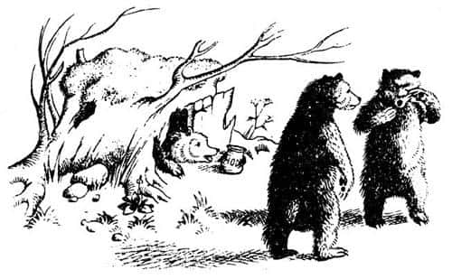
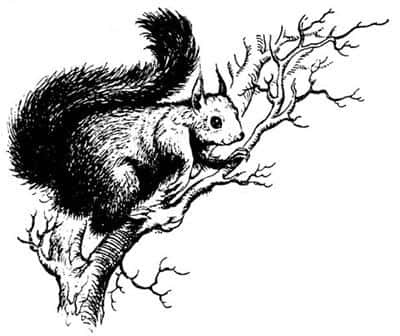
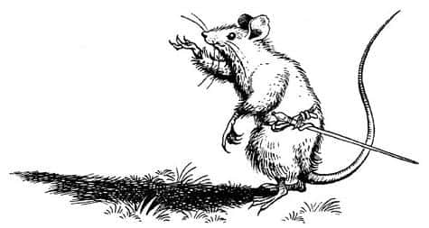
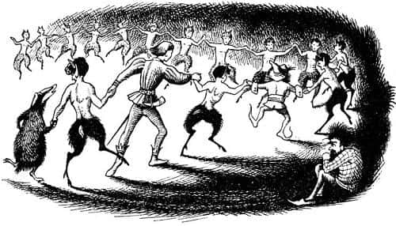

Gizli Yaşayanlar
Caspian’ın hayatının en güzel günleri şimdi başlıyordu. Çimlerin üzerindeki çiyi parıldatan güzel bir yaz sabahı, Caspian, Porsuk ve iki cüceyle birlikte ormandan yukarı, eyere benzer bir vadiye gitti ve oradan da Archenland’ın yeşil yaylalarına bakan, güneşli güney yamaçlarına doğru yola çıktılar.
“Önce üç şişman ayıyı ziyaret edeceğiz” dedi Yaygaracı.

Ağaçların arasındaki bir açıklıkta yosunla kaplanmış içi kof, yaşlı bir meşe ağacına yaklaştılar. Mantarsever pençesiyle ağacın gövdesine üç kez vurdu. Hiç cevap yoktu. Sonra tekrar vurdu ve içeriden cılız bir ses geldi: “Toz ol. Henüz kalkma zamanı değil.” Fakat üçüncü defa çaldığında, içerden küçük bir gökgürültüsünü andıran bir ses duyuldu, kapıya benzer bir şey açıldı ve küçük gözlerini kırpıştıran üç şişman ayı göründü. Her şeyi anlattıklarında (bu epey zaman aldı, çünkü ayılar uyku sersemiydi) tıpkı Mantarsever’in dediği gibi, onlar da bir âdemoğlunun Narnia kralı olması gerektiğini söyleyip Prens’i öptüler – burunlarını çekerek ıslak ıslak öpmüşlerdi. Sonra ona bal ikram ettiler. Caspian sabahın bu vaktinde ekmeksiz bal yemek istemiyordu aslında, ama teklifi geri çevirmenin kaba bir davranış olacağını düşündü. Dişlerine yapışan balı temizlemesi epeyce vaktini aldı.
Uzun kayın ağaçlarının arasına gelene kadar yürüdüler. Mantarsever orada, “Pervane! Pervane! Pervane!”diye bağırdı ve bağırır bağırmaz, başlarının üzerine gelinceye kadar daldan dala atlayan, Caspian’ın o güne kadar gördüğü en muhteşem, kıpkızıl bir sincap peydahlandı. Arada bir kalenin bahçesinde görülen o sıradan, dilsiz sincaplardan çok daha büyüktü; aslında neredeyse teriyer cinsi bir köpek kadardı. Yüzündeki ifadeden konuşabildiği belli oluyordu. Asıl zorluk onu susturmaktı, çünkü bütün sincaplar gibi o da çok gevezeydi. Hemen Caspian’ı buyur etti ve fındık isteyip istemediğini sordu. Caspian evet deyip teşekkür etti. Pervane fındık getirmek üzere sıçrayarak uzaklaşırken, Mantarsever Caspian’ın kulağına, “Onu izleme! Diğer yöne bak. Yiyecekleri sakladıkları yere giderlerken onları seyredersen, fındıkları sakladıkları yeri öğrenmeye çalıştığını düşünürler – bu sincaplar arasında saygısızlık anlamına gelir” diye fısıldadı. Bir süre sonra Pervane fındıkla geri döndü. Caspian fındığı yedikten sonra Pervane, diğer arkadaşlarına bir haber iletmeyi isteyip istemediklerini sordu. “Toprağa bir kez olsun dokunmadan düşünebileceğiniz her yere gidebilirim” dedi. Mantarsever ve cüceler bunun çok iyi bir fikir olduğunu düşündü – tuhaf isimli her türden insana iletilmek üzere, üç gün sonra gece yarısında, Dans Bahçesi’nde yapılacak yemekli bir toplantı mesajı verdiler.

“Bunu Üç Şişman Ayı’ya da söylesen iyi olur” diye ekledi Yaygaracı. “Onlara söylemeyi unuttuk.”
Bir sonraki ziyaretleri Ürperti Ormanı’nın Yedi Kardeşleri’neydi. Yaygaracı onları geldikleri yere, eyere benzeyen vadiye götürdü. Dağların kuzey yamacından doğuya, kayalıklar ve heybetli köknar ağaçları arasındaki alana gelene kadar yürüdüler. Çok sessiz yürüyorlardı. Biraz sonra Caspian, sanki birisi balyozla toprağı dövüyormuş gibi, ayakları altında yerin sarsıldığını hissetti. Yaygaracı aşağı yukarı bir kuyu ağzı büyüklüğündeki yassı bir kayaya yaklaşıp ayaklarıyla vurdu. Uzun bir sessizlikten sonra kaya aşağıdaki biri ya da bir şey tarafından yerinden oynatıldı ve önce sıcak bir buharın yükseldiği yuvarlak ve karanlık bir delik göründü, deliğin ortasından da tıpkı Yaygaracı’ya benzeyen bir cücenin başı çıktı. Orada uzun uzun konuştular. Anlaşılan cüce, sincap ya da ayılardan daha şüpheciydi. Ancak sonunda bütün grup aşağıya inmek üzere davet edildi. Caspian kendini karanlık bir merdivenden yeraltına inerken buldu. Merdivenin dibine geldiğinde bir ışık gördü; bir ocağın ateşiydi bu. Bulunduğu yer tastamam bir demirhaneydi. Yan taraftan bir yeraltı nehri geçiyordu. Körüğün başında iki cüce vardı. Bir diğeri, kıpkırmızı bir metal parçasını örsün üzerinde tutuyor, dördüncüsü de çekiçle dövüyordu. Nasırlı küçük ellerini yağlı bir beze silmekte olan iki cüceyse misafirleri karşılamak üzere harekete geçmişti. Onları Caspian’ın dost olduğuna ikna etmek biraz zaman aldı, ama sonunda hepsi birden, “Yaşasın Kral” diye bağırdı. Soyluluk örneği gösterip hediyeler verdiler – Caspian, Yaygaracı ve Nikabrik’e zincir zırh, miğfer ve kılıç vermişlerdi. İsteseydi Porsuk da aynı şeylere sahip olabilirdi, ancak bir hayvan olduğunu, pençeleri ve dişleriyle postunu korumayı başaramazsa, yaşamaya değmeyeceğini söyledi. Silahların işçiliği Caspian’ın gördüklerine kıyasla daha incelikliydi. Bir oyuncak kadar çürük ve bir değnek kadar kaba olan kendi kılıcı yerine, cüce yapımı kılıcı memnuniyetle kabul etti. Hepsi de kızıl cüce olan Yedi Kardeşler, Dans Bahçesi’ndeki ziyafete gelmeye söz verdi.
Biraz ilerideki kuru, kayalık bir dere koyağında, beş kara cücenin mağarasına ulaştılar. Cüceler Caspian’a şüpheyle baktılar, ama sonunda en yaşlıları, “Eğer Miraz’ın rakibiyse, onu kralımız olarak kabulleneceğiz” dedi. Biraz daha genç olanı, “Sizin adınıza ileriye, yukarıdaki sarp kayalıklara gidelim mi? Orada, yukarıda sizi tanıştırabileceğimiz birkaç insanyiyen dev ve bir kocakarı var.”
“Kesinlikle hayır” dedi Caspian.
“Ben de aynı fikirdeyim” dedi Mantarsever. “O türden birilerini istemiyoruz yanımızda.” Nikabrik aynı fikirde değildi, ama Yaygaracı ve Porsuk onu dinlemedi. Narnia’da iyi yaratıkların yanı sıra, o eski hikâyelerde sözü edilen iğrenç yaratıkların torunlarının da yaşadığını öğrenmek Caspian’ı sarsmıştı.
“O ayaktakımını yanımıza alırsak Aslan bizimle olan dostluğuna son verir” dedi Mantarsever, kara cücelerin mağarasından çıkarken.
“Sadece Aslan mı?” dedi Yaygaracı. Sesinde neşeli ancak küçümser bir tavır vardı. “Daha önemlisi ben de yanınızda olmam.”
“Sen Aslan’a inanıyor musun?” dedi Caspian Nikabrik’e.
“Bu lanetli Telmar barbarlarını paramparça edecek ya da Narnia’nın dışına sürecek herkese ya da her şeye inanırım, Aslan ya da Beyaz Cadı fark etmez, anlıyor musun?” dedi.
“Susun, susun” dedi Mantarsever. “Ne söylediğinizi bilmiyorsunuz. Cadı, Miraz ve onun soyundan gelen herkesten daha kötü bir düşmandı.”
“Cüceler için öyle değildi” dedi Nikabrik.
Sonraki ziyaretleri daha hoştu. Dağlardan aşağıya doğru indiklerinde, çağıldayarak akan bir nehrin bulunduğu ormanlık bir vadiye ulaştılar. Nehrin hemen kenarındaki ağaçsız yerler, yabangülleri ve yüksükotlarıyla kaplıydı ve arı vızıltısından geçilmiyordu. Burada Mantarsever tekrar bağırdı, “Fırtına! Fırtına!” Kısa bir sessizlikten sonra toynak sesleri duyuldu. Sesler tüm vadide yankılanana kadar kuvvetlendi ve sonunda, Caspian’ın o ana kadar gördüğü en soylu yaratık olan, heybetli sentor Fırtına ve üç oğlu çalıları çiğneyerek ortaya çıktı. Bedeni parlak kestane rengindeydi. Geniş göğsünü kaplayan sakalı altın kırmızısıydı. Fırtına bir kâhin ve yıldızbilimciydi; onların geliş nedenini biliyordu.
“Yaşasın Kral” diye bağırdı. “Ben ve oğullarım hazırız. Savaş ne zaman başlayacak?”
O ana kadar ne Caspian ne de diğerleri savaşı düşünmemişti. Olsa olsa, arada bir insanların çiftliklerini yağmalamak, güneydeki bu vahşi topraklara gereğinden fazla sokulan avcıları engellemek gibi ufak tefek fikirleri vardı. Temel amaçları, ormanlarda ve mağaralarda gizlenip yaşamlarını sürdürmek ve eski Narnia’yı diriltecek gücü kazanmaktı. Fırtına konuşur konuşmaz herkes daha da ciddileşti.
“Miraz’ı Narnia dışına sürmek için gerçek bir savaştan mı söz ediyorsun?” diye sordu Caspian.
“Başka ne olabilir ki?” dedi sentor. “Ekselanslarının zırh giyip kılıç kuşanmasının başka bir nedeni var mı?”
“Bu mümkün mü Fırtına?” dedi Porsuk.
“Tam zamanı” dedi Fırtına. “Ben gökleri izlerim, Porsuk. Hatırlamak nasıl ki senin görevinse, seyretmek de benimki. Tarva ve Alambil yükseklerde gökkubbenin odasında buluştular ve bir kez daha yeryüzündeki yaratıkları adlandıracak, onlara hükmedecek bir âdemoğlu ortaya çıktı. O saat geldi. Dans Bahçesi’ndeki toplantımız bir savaş toplantısı olmalı.” Öyle bir sesle konuşmuştu ki, ne Caspian ne de diğerleri tereddüt etti. Artık bir savaşa girmeleri kaçınılmazdı ve bu savaşı kazanmak zor, ama imkânsız değildi.
Öğle vakti geçiyordu. Sentorların getirdiği yulaf keki, elma, baharat, şarap ve peyniri yedikten sonra dinlendiler.
Bir sonraki ziyaret yeri yakındaydı, ama insanların yaşadığı bölgeden uzak durmak için çevresinden dolanıp uzun bir yol kat etmek zorunda kaldılar. Öğle sonrası sıcağında, çalılıkların çevrelediği düz tarlalara ulaştıklarında vakit epeyce ilerlemişti. Mantarsever orada, yeşil renkli bir tümseğin deliğinden içeri seslendi. Delikten, Caspian’ın beklediği en son şey fırladı – konuşan bir fare! Şüphesiz sıradan bir fareden daha büyüktü, arka ayakları üzerinde durduğunda boyu otuz santimi geçiyordu. Benzerlerinden daha geniş olan kulakları neredeyse bir tavşanınki kadar uzundu. İsmi Bastıbacak’tı. Neşeli ve savaşçı bir fareydi. Beline minicik bir kılıç asmış, ağzının kenarındaki uzun tüyleri sanki bıyıklarıymış gibi burmuştu. “Biz on iki kişiyiz efendim” dedi, şık ve zarif bir reveransla. “Halkıma ait ne varsa kayıtsız şartsız Ekselanslarının emrine veriyorum.” Caspian gülmemek için zor tutmuştu kendini. Bastıbacak ve halkının kolaylıkla bir çamaşır sepetine konulup, birinin sırtında eve götürülebileceğini düşünmekten kendini alamamıştı.
O gün Caspian’ın tanıştığı bütün yaratıkları anlatmak çok uzun sürer – Köstebek Kuyukazan, üç porsuk (Mantarsever gibi), Tavşan Zıpzıp, Kirpi Kambur…

Artık güneş batmakta olduğu için papatyalar yapraklarını kapatıyor, ekinlerin üzerinde uçan kargalar, uyumak üzere evlerine dönüyordu. Sonunda gölgeleri uzamış karaağaçların çevrelediği daire şeklindeki düz ve çimenlik bir alanın kenarındaki kuyunun yanı başında dinlenmeye çekildiler. Burada beraberlerinde getirdikleri yiyecekleri yediler ve Yaygaracı piposunu yaktı (Nikabrik pipo içmezdi).
“Şimdi” dedi Porsuk, “kuyunun ve ağaçların ruhlarını da uyandırabilseydik bugün için iyi bir iş yapmış olurduk.”
“Uyandıramaz mıyız?” dedi Caspian.
“Hayır” dedi Mantarsever. “Onları etkileme gücüne sahip değiliz. İnsanların bu topraklara gelip ağaçları keserek dereleri kirletmesinden sonra orman ve su perileri derin bir uykuya daldı. Yeniden uyanıp uyanmayacaklarını da kimse bilemez. Bu bizim açımızdan büyük bir kayıp. Telmarlılar ağaçlardan öyle korkarlar ki, öfkeli bir ağaç gördüklerinde korkudan akılları başlarından gider ve tabana kuvvet Narnia’dan kaçarlar.”
“Siz hayvanlarda da ne hayal gücü var!” dedi Yaygaracı, “Fakat neden ağaçlar ve sudan medet umuyorsun ki? Taşlar kendilerini yaşlı Miraz’a fırlatmaya başlasalar daha iyi olmaz mı?”
Porsuk homurdanmakla yetindi. Sonrasında derin bir sessizlik oldu. Caspian, arkalarda bir yerden, ormanın derinliklerinden geldiğini düşündüğü belli belirsiz, şarkıya benzer bir ses duyduğunda uykuya dalmak üzereydi. O an bunun yalnızca bir rüya olduğunu sandı ve arkasını döndü. Ne var ki kulağı yere değer değmez bir davul gümbürtüsü duydu ya da öyle hissetti (hangisi olduğunu söylemek zor). Başını kaldırdı. Davul sesleri o anda belirsizleşti, ama müzik daha belirgin biçimde duyuluyordu. Flüt sesine benziyordu. Mantarsever’in ormanı seyrettiğini gördü. Ay ışıl ışıldı – Caspian düşündüğünden de fazla uyumuştu. Müzik giderek yaklaştı, yabansı, ama rüya gibi bir melodiyle birlikte, pek çok ayağın çıkardığı yumuşak sesler duyuluyordu. Sonunda ormanın içinden, Caspian’ın hayatı boyunca düşlediği dans eden o şekiller çıktı. Cücelerden çok uzun değildiler, ama daha zayıf ve zariftiler. Kıvırcık tüylü kafalarında küçük boynuzlar vardı. Vücutlarının çıplak üst kısmı soluk ışıkta parlıyordu. Bacakları ve ayakları keçilerinki gibiydi.

“Faunlar!” diye bağırdı Caspian sıçrayarak ve aynı anda Faunlar etrafını sardı. Olan biteni açıklamak çok kısa sürdü, Caspian’ı hemen kabul ettiler. Ne yaptığını anlayamadan, Caspian kendini dans ederken buldu. Yaygaracı da yavaş ve kesintili hareketlerle ona katıldı. Hatta Mantarsever de hantal hareketlerle sıçrayıp, beceriksizce dans etti. Sadece Nikabrik olduğu yerde kalmış, sessizce seyrediyordu. Faunlar kamış flütler eşliğinde Caspian’ın etrafında dans ettiler. Aynı zamanda hem kederli hem de mutlu görünen tuhaf yüzleriyle düzinelerce Faun ona bakıyordu; Mentius ve Obenitus, Dumnus, Voluns, Voltinus, Girbius, Nimienus, Nausus ve Oscuns… Onları Pervane göndermişti.
Caspian uyandığında bunun bir rüya olmadığına zorlukla inanabildi – çimler küçük, çatallı toynak izleriyle kaplıydı.